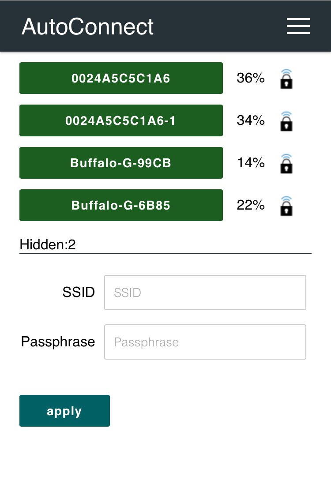
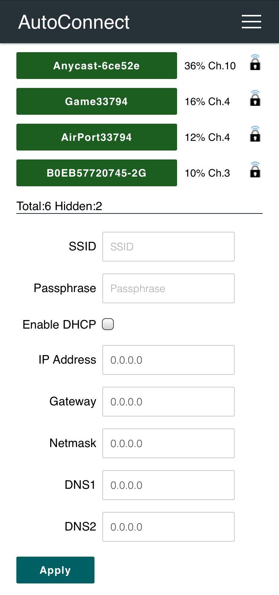
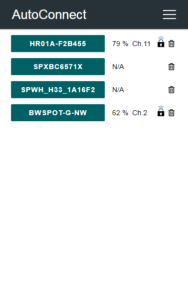
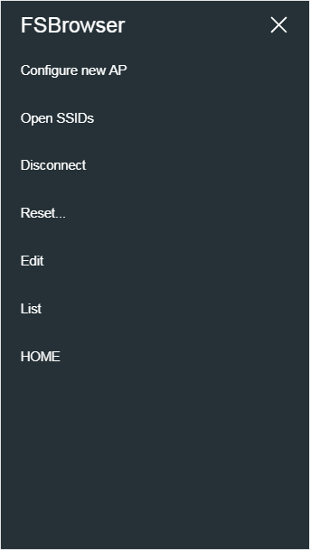

AutoConnect menu
Luxbar
The AutoConnect menu is developed using the LuxBar which is licensed under the MIT License. See the License.
Where the from¶
The following screen will appear as the AutoConnect menu when you access to AutoConnect root URL via http://{localIP}/_ac. (eg. http://172.217.28.1/_ac) It is a top page of AutoConnect which shows the current WiFi connection statistics. To invoke the AutoConnect menu, you can tap at right on top.

AutoConnect root URL
It is assigned "/_ac" located on the local IP address of ESP8266/ESP32 module by default and can be changed with the Sketch. A local IP means Local IP at connection established or SoftAP's IP.
Right on top¶
Currently, AutoConnect supports six menus. Undermost menu as "HOME" returns to the home path of its sketch.
- Configure new AP: Configure SSID and Password for new access point.
- Open SSIDs: Opens the past SSID which has been established connection from the flash.
- Disconnect: Disconnects current connection.
- Reset...: Rest the ESP8266/ESP32 module.
- Update: OTA updates. (Optional)
- HOME: Return to user home page.

Configure new AP¶
It scans all available access points in the vicinity and display it further the WiFi signal strength and security indicator as of the detected AP. Below that, the number of discovered hidden APs will be displayed. Enter SSID and Passphrase and tap "Apply" to start a WiFi connection.

If you want to configure with static IP, uncheck "Enable DHCP". Once the WiFi connection is established, the entered static IP1 configuration will be stored to the credentials in the flash and restored to the station configuration via the Open SSIDs menu.

Open SSIDs¶
After WiFi connected, AutoConnect will automatically save the established SSID and password to the flash on the ESP module. Open SSIDs menu reads the saved SSID credentials and lists them as below. Listed items are clickable buttons and can initiate a connection to its access point.

Also, this menu allows you to interactively delete the stored credentials. icon will appear next to each SSID in the Open SSIDs menu when the credential removal feature is enabled with AutoConnectConfig::menuItems. Clicking the on this screen will delete the SSID. This feature is disabled by default.

Saved credentials data structure has changed
A structure of AutoConnect saved credentials has changed in v1.1.0 and was lost backward compatibility. Credentials saved by AutoConnect v1.0.3 (or earlier) will not display properly with AutoConnect v1.1.0. You need to erase the flash of the ESP module using the esptool before the Sketch uploading.
esptool -c esp8266 (or esp32) -p [COM_PORT] erase_flash
Disconnect¶
It disconnects ESP8266/ESP32 from the current connection. Also, ESP8266/ESP32 can be automatically reset after WiFi cutting by instructing with the Sketch using the AutoConnect API.
After tapping the Disconnect, you will not be able to reach the AutoConnect menu. Once disconnected, you will need to set the SSID again for connecting to the WLAN.
Reset...¶
Resetting the ESP8266/ESP32 module will initiate a reboot. When the module restarting, the esp8266ap or esp32ap access point will disappear from the WLAN and the ESP8266/ESP32 module will begin to reconnect a previous access point with WIFI_STA mode.

Not every ESP8266 module will be rebooted normally
The Reset menu is using the ESP.reset() function for ESP8266. This is an almost hardware reset. In order to resume the Sketch normally, the state of GPIO0 is important. Since this depends on the circuit implementation for each module, not every module will be rebooted normally. See also FAQ.
Custom menu items¶
If the Sketch has custom Web pages, the AutoConnect menu lines them up with the AutoConnect's items. Details for Custom Web pages in AutoConnect menu.
Update¶
If you specify AutoConnectConfig::ota to import the OTA update feature into Sketch, an item will appear in the menu list as Update.
The Update menu item will appear only AutoConnectOTA enabled
The Update item is displayed automatically in the menu only when AutoConnectConfig::ota is specified with AC_OTA_BUILTIN or AutoConnectUpdate is attached.
HOME¶
A HOME item at the bottom of the menu list is a link to the home path, and the default URI is / which is defined by AUTOCONNECT_HOMEURI in AutoConnectDefs.h header file.
#define AUTOCONNECT_HOMEURI "/"
Also, you can change the HOME path using the AutoConnect API. The AutoConnect::home function sets the URI as a link of the HOME item in the AutoConnect menu.
Applying the active menu items¶
Each of the above menu items can be configured with a Sketch. AutoConnectConfig::menuItems specifies the menu items that will be enabled at runtime. You can also adjust available menu items using AutoConnect::enableMenu and AutoConnect::disableMenu function. It is an alternative to AutoConnectConfig::menuItems and provides a shortcut to avoid using AutoConnectConfig.
For example, by disabling the Configure new AP and Disconnect item, you can prevent the configuration for unknown access points.
AutoConnect portal;
AutoConnectConfig config;
void setup() {
config.menuItems = AC_MENUITEM_OPENSSIDS | AC_MENUITEM_RESET | AC_MENUITEM_HOME;
portal.config(config);
}
The next is another way to achieve the same effect.
AutoConnect portal;
void setup() {
portal.disableMenu(AC_MENUITEM_CONFIGNEW | AC_MENUITEM_DISCONNECT);
portal.config(config);
}
The result of executing the above Sketch is as below:

Details for AutoConnectConfig::menuItems.
Attaching to AutoConnect menu¶
The AutoConnect menu can contain your sketch's web pages as extra items as a custom. It works for HTML pages implemented by the ESP8266WebServer::on handler or the WebServer::on handler for ESP32. That is, you can make them invoke the legacy web pages from the AutoConnect menu. The below screen-shot is the result of adding an example sketch for the ESP8266WebServer library known as FSBrowser to the AutoConnect menu item. It can add Edit and List items with little modification to the legacy sketch code.

AutoConnect allows capturing the extra pages handled with ESP8266WebServer or WebServer's legacy into the AutoConnect menu. See Section Advanced Usage for detailed instructions on how to add the extra pages into its menu.
-
AutoConnect does not check the syntax and validity of the entered IP address. If the entered static IPs are incorrect, it cannot connect to the access point. ↩